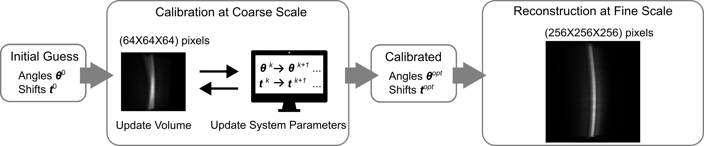

Automatic Calibration¶
In this section, we propose a computational framework that is able to detect the model mismatch between the forward model and measurement data. We start with a 3D forward model that fully characterizes our refined OPT geometry, including the 3D tilt that is out of reach of existing 2D methods. Then, we formulate the calibration of the system parameters as a multiscale joint reconstruction-calibration optimization problem. It outputs a set of calibrated system parameters that enables us to improve the reconstruction quality. This multiscale scheme allows us to overcome the memory bottleneck of 3D models and helps us to accelerate the calibration.
Forward Model and Characterization of Mechanical Errors¶
The coordinate system to describe OPT geometry is the same as in Fig. 10 (b). When there exist mechanical errors, we describe the angular errors as a perturbation vector \(\boldsymbol{\delta}=(\boldsymbol{\delta}_{\boldsymbol{\varphi}},\delta_{\psi_1},\delta_{\psi_2})\). The actual angles \(\boldsymbol{\theta}={\boldsymbol{\theta}}^*+\boldsymbol{\delta}\) can be expressed as a sum of the error vector \(\boldsymbol{\delta}\) and the ideal angle vector \({\boldsymbol{\theta}}^* = (\boldsymbol{\varphi}^*, \psi_1^*, \psi_2^*)\) that characterizes an ideal OPT system: equidistant rotation angles \(\boldsymbol{\varphi}^*\) between 0 and 360 degrees and \(\psi_1^* = \psi_2^* = 0\). In addition, translation error of the sample is described by a 2D vector \(\boldsymbol{t}=(t_1,t_2)\in\mathbb{R}^2\) in the detector plane, and the ideal \(\boldsymbol{t}^*=(0, 0)\).
We omit optical effects to keep the forward model computationally efficient, which is often accepted in focal-sheet-scanning OPT setups [114]. To fully characterize mechanical errors, we adopt the 3D X-ray transform \(\mathcal{P}_{\boldsymbol{\theta}}:L_2\left(\mathbb{R}^3\right)\rightarrow L_2\left(\mathbb{R}^2\right)\):
It provides a mathematical description of straight-ray projections of a sample at any 3D pose [87]. The compactly supported function \(f(\boldsymbol{u})\in L_2(\mathbb{R}^3)\), \(\boldsymbol{u}=(x,y,z)\) represents the 3D sample to be reconstructed. Measurement in the detector plane is denoted by \(b^{\boldsymbol{\theta},\,\boldsymbol{t}}(\boldsymbol{v})\) for a location \(\boldsymbol{v}=(\xi,\eta)\), a sample orientation \(\boldsymbol{\theta}\), and a shift vector \(\boldsymbol{t}\). The additive random noise is denoted by \(n(\boldsymbol{v})\).
To numerically implement the forward model, we follow the discretization framework detailed in section Discrete Formulation of the previous chapter Modeling and Solving of Inverse Problems. We assume that measurement \(b^{\boldsymbol{\theta},\boldsymbol{t}}(\boldsymbol{v})\) is acquired at sampled points \(\boldsymbol{v}_{\boldsymbol{j}} = \Delta\boldsymbol{j} = (j_1\Delta_1,j_2\Delta_2)\), where \(\boldsymbol{j}=(j_1,j_2)\in\Omega_{\text{2D}}\subset\mathbb{Z}^2\) is the index of the sampled points. The diagonal matrix \(\Delta=\text{diag}\left\{\Delta_1,\Delta_2\right\}\) contains the sampling steps in the \(\xi\) and \(\eta\) directions on the detector plane, respectively. The set \(\Omega_{\text{2D}}\) denotes the support of the measurement which consists of \(M\) elements in total. Plugging in this formulation into Eq. (20), we obtain
Furthermore, we represent the 3D sample using a generalized sampling framework in [59] which we have described in the previous chapter Modeling and Solving of Inverse Problems. We introduce a special reconstruction space \(V(\varphi)\) in which \(f\) is represented by a finite sum of a sequence of coefficients \(c[\cdot]\) multiplied by a series of shifted basis functions (with a sampling step of 1):
The 3D volume is thus represented by a vector \(\mathbf{c}=\big(c[\boldsymbol{k}]\big)_{\boldsymbol{k} \in\Omega_{\mathrm{3D}}}\in\mathbb{R}^N\), and \(\Omega_{\mathrm{3D}}\subset \mathbb{Z}^3\) is the compact support of the coefficients. While the standard discretization uses rectangular basis functions, here we choose the optimized Kaiser-Bessel Window Function (KBWF) as they are well suited for tomographic settings [60, 115]
where \(a>0\) is the support radius that controls the smoothness of the KBWF, \(\alpha>0\) is the window taper that determines the shape of the KBWF and \(I_m\) is the modified Bessel function of order \(m\). In our experiments, we used the following set of parameters: \(a=4\), \(\alpha=19\) and \(m=2\). The advantage of KBWFs is that they are isotropic, compactly supported, and its X-ray transform \(\mathcal{P}_{\boldsymbol{\theta}}[\varphi]\) is independent of \(\boldsymbol{\theta}\) thus greatly reducing computational time [116]. Besides, it is convenient to compute analytic gradients for the tilt angles and shifts [87]. As a result, we use coefficient vector \(\mathbf{c}\in\mathbb{R}^N\) to equivalently represent the 3D volume during reconstruction. Once \(\mathbf{c}\) is recovered, the corresponding volume can be retrieved by expanding \(\mathbf{c}\) through the formula in Eq. (22).
Substituting \(f\) with KBWFs yields the discrete forward model \(\boldsymbol{\theta}\)
where is \(\mathbf{M}_{\boldsymbol{\theta}^{\perp}}\) is the orthogonal projector matrix (see [87] for details). By stacking the measurement vectors \(b^{\boldsymbol{\theta},\boldsymbol{t}}(\Delta\boldsymbol{j})_{\boldsymbol{j}\in\Omega_{\text{2D}}}\), the system matrices \(\mathbf{H}(\boldsymbol{\theta},\boldsymbol{t})[\boldsymbol{j},\boldsymbol{k}]= \mathcal{P}_{\boldsymbol{\theta}}[\varphi](\Delta\boldsymbol{j}- \mathbf{M}_{\boldsymbol{\theta}^{\perp}}\boldsymbol{k}-\boldsymbol{t}) \in\mathbb{R}^{M \times N}\), and the noise vector \(\mathbf{n}=n(\Delta\boldsymbol{j})_{\boldsymbol{j}\in\Omega_{\text{2D}}}\) at all \(P\) orientations, we obtain the following linear system
where \(\mathbf{b}, \mathbf{n} \in\mathbb{R}^{MP}\) are the discrete measurement and noise vectors of \(P\) projections, and the system matrix \(\mathbf{H}(\boldsymbol{\theta},\boldsymbol{t}) \in \mathbb{R}^{MP \times N}\) is a function of system parameters \(\boldsymbol{\theta}\) and \(\boldsymbol{t}\). The 3D volume is represented by a finite-dimensional coefficient vector \(\mathbf{c}\in\mathbb{R}^N\).
Multiscale Joint Reconstruction-Calibration Algorithm¶
The measurement data generated by a real OPT experiment usually has a very large size. For instance, current cameras can acquire OPT images up to \(2048^2\) pixels with pixel size less than 1 \(\mu\)m per projection [13]. Moreover, the rotation motor can achieve a step angle as precise as 0.3 degrees, resulting in 1200 projections. Therefore, storing a vector \(\mathbf{b}\) can take up several tens of gigabytes. 3D reconstruction and calibration on such large datasets are infeasible either memory-wise on GPU or speed-wise on CPU. We thus propose a multiscale scheme (see Fig. 12) to overcome the computational bottleneck. We run our calibration algorithm on downsampled measurement data at a computationally feasible scale.


Fig. 12 Workflow of the multiscale calibration-reconstruction algorithm. We first perform a joint reconstruction-calibration at coarse scale, then, use calibrated parameters for final reconstruction at fine scale.¶
Algorithm 1 (OPT Joint Reconstruction-Calibration)
Input: Downsampled measurement \(\mathbf{b}_{\text{c}}\) for coarse calibration, measurement \(\mathbf{b}_{\text{r}}\) for fine reconstruction, initial guesses \(\boldsymbol{\theta}^*\) and \(\boldsymbol{t}^*\) that correspond to an ideal system, forward model \(\mathbf{H}_{\text{c}}\) at the coarse scale, maximal number \(K\) of global iterations
\(k = 0\)
\(\boldsymbol{\theta}^k = \boldsymbol{\theta}^*, \boldsymbol{t}^k=\boldsymbol{t}^*\), \(\mathbf{c}_{\text{c}}^k=\mathbf{0}\) (initial guess of the coefficient vector for coarse calibration)
For \(k=1 \text{ to } K\):
i. \(\mathbf{c}_{\text{c}}^k \leftarrow\arg\underset{\mathbf{c}_{\text{c}}}{\min}\left\{\|\mathbf{H}_{\text{c}} (\boldsymbol{\theta}^{k-1},\boldsymbol{t}^{k-1})\mathbf{c}_{\text{c}} - \mathbf{b}_{\text{c}}\|^2_2\right\}\)
ii. \((\boldsymbol{\theta}^k,\boldsymbol{t}^k)\leftarrow\arg\underset{\boldsymbol{\theta}\in\mathbb{R}^{P+2}, \,\boldsymbol{t}\in\mathbb{R}^{2}}{\min}\left\{\|\mathbf{H}_{\text{c}}(\boldsymbol{\theta},\boldsymbol{t}) \mathbf{c}_{\text{c}}^k- \mathbf{b}_{\text{c}}\|^2_2\right\}\)
Set the optimized parameters \(\boldsymbol{\theta}^{opt} = \boldsymbol{\theta}^K, \boldsymbol{t}^{opt} = \boldsymbol{t}^K\)
\(\mathbf{c}^{opt} \leftarrow\arg\underset{\mathbf{c}\in\mathbb{R}^N}{\min}\left\{\|\mathbf{H} (\boldsymbol{\theta}^{opt},\boldsymbol{t}^{opt})\mathbf{c} - \mathbf{b}_{\text{r}}\|^2_2\right\}\) (Reconstruction at fine scale)
Return: \(\mathbf{c}^{opt}\)
The inverse problem here is formulated as:
The joint reconstruction-calibration algorithm is detailed in Algorithm 1. It consists of recovering the coefficient vector \(\mathbf{c}\) by solving the optimization problem in Step i and calibrating the system parameters \(\boldsymbol{\theta}\) and \(\boldsymbol{t}\) by solving another optimization problem in Step ii in alternating fashion. We start with an initial guess of system parameter \(\boldsymbol{\theta}^0=\boldsymbol{\theta}^*\) and \(\boldsymbol{t}^0=\boldsymbol{t}^*\) that corresponds to an ideal setup.
Motivated by our observations in Catalog of Mechanical Artifacts that the radius of circle artifacts is directly related to the amount of translation, we shift projections over the range of values estimated from the severity of artifacts, apply the FBP algorithm to observe the evolution of circle artifacts in the reconstruction, then choose the value such that circle artifacts are sufficiently suppressed as the initial guess for \(\boldsymbol{t}\). This allows us to attain a good initial guess for \(\boldsymbol{t}\) rapidly, which is crucial for the success of the calibration algorithm as Step ii is a non-convex optimization problem. The calibrated system parameters are then used to reconstruct an artifact-free 3D image by running Step 5 in Algorithm 1 at fine scale, as described in Fig. 12. We use accelerated gradient descent [75] to solve the optimization problems in Step i and 5, and semi-coordinate-wise gradient descent [87] for Step ii.